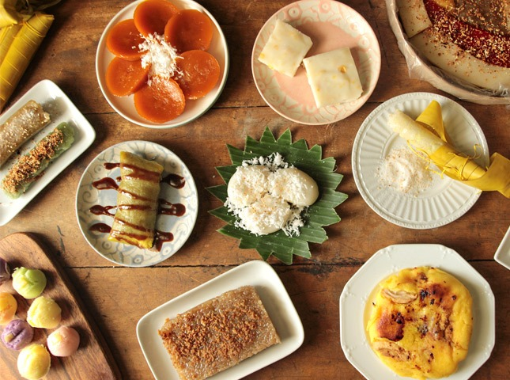

🍡 Our Delicacies


.jpg)
About Us

Espesyal Delicacies Shop is a homegrown business dedicated to bringing authentic Filipino delicacies closer to the community. Founded with a passion for preserving traditional recipes, our shop offers a wide variety of kakanin and native treats made with care, quality ingredients, and time-honored techniques.
Our journey began in a small kitchen, where family recipes were lovingly prepared and shared with neighbors. What started as a simple way to bring joy through food gradually grew into a trusted delicacies shop known for its consistent taste and heartfelt service.
At Espesyal Delicacies Shop, we believe that every delicacy tells a story. From bibingka and puto bumbong to sapin-sapin and kutsinta, each product reflects the rich culinary heritage of the Philippines.
Our mission is to celebrate Filipino culture by keeping these beloved delicacies alive and accessible to everyone.
To become a well-loved delicacies shop that represents the richness of Filipino food culture while continuing to innovate and serve future generations.